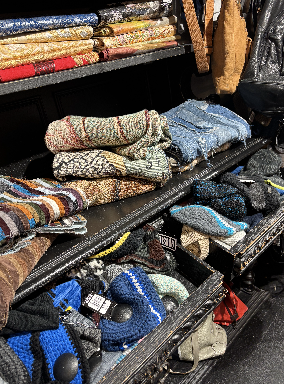
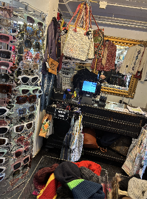

Het proces
Op de hoofdwerkplaats komen alle producten binnen, dan heb ik het over kleding en schoenen. En ook accesoires zoals tassen en riemen. Daar worden alle producten gecontroleerd op beschadigingen, en als het echt nodig is worden ze dan ook meteen daar weer opgelapt en opgeknapt.
Zodat ze weer zo goed als nieuw lijken, als dat gebeurd is gaan ze dan in de was. De wasmachines hebben allemaal een groen label dus het gebeurd allemaal met groene verantwoorde energie. Het verwarmen en drogen wordt gedaan met stoom, die hun energie krijgen van Episode's eigen zonnepanelen.
Na het wassen wordt de laatste check gedaan, en krijgen de kledingstukken een label en een beveiligingslabel. Dan worden ze uiteindelijk getransporteerd naar de winkels.
Als je hierover meer informatie wilt lezen kan dat dan hier via deze link.
In de winkel
Bij de winkels van episode wordt er veel geluisterd naar de wensen van klanten. Daarom zorgen ze altijd ervoor dat ze de beste kwaliteit kleding in de winkels hebben hangen en dat voor de beste prijzen.
Als je hierover meer wilt lezen kan je dat hier vinden op de link naar de site